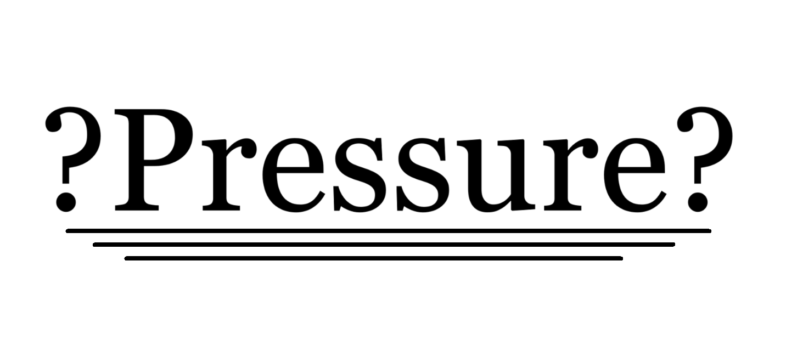

The Pros and Cons of Pressuring Someone
Understanding the Implications
Introduction
Pressure is a pervasive aspect of human interactions and decision-making processes. While some forms of pressure can be motivational and lead to positive outcomes, there are also potential drawbacks and ethical considerations that need to be taken into account. In this article, we will explore the pros and cons of pressuring someone, shedding light on the effects it can have on individuals and relationships.
Pros of Pressuring Someone
1.) Motivation and Productivity
One potential benefit of applying pressure is that it can spur individuals to achieve their best performance. When people feel challenged and accountable, they may be more motivated to overcome obstacles and accomplish their goals.
Ads
2.) Faster Decision-Making
Pressure can prompt individuals to make decisions more promptly, especially in situations where time is of the essence. The sense of urgency can encourage swift actions and prevent unnecessary delays.
Ads
3.) Skill Development
In some cases, gentle pressure can encourage personal growth and skill development. When individuals are nudged beyond their comfort zones, they may acquire new abilities, learn to adapt, and enhance their problem-solving skills.
Ads
4.) Higher Standards and Expectations
Pressure can lead to setting higher standards and expectations. It can encourage people to strive for excellence, exceed their own limitations, and achieve results they might not have thought possible.
Ads
Cons of Pressuring Someone
1.) Stress and Mental Health Impact
Excessive or unrelenting pressure can lead to stress, anxiety, and mental health issues. Continuous pressure can negatively affect well-being, leading to burnout and even more severe psychological distress.
Ads
2.) Diminished Autonomy
Pressuring someone to conform to a particular course of action may limit their ability to make independent choices. It can undermine their autonomy and leave them feeling coerced or manipulated.
Ads
3.) Strained Relationships
Applying pressure can strain relationships, especially when it involves exerting influence over someone's decisions. Relationships built on trust and open communication may be compromised if pressure becomes a dominant dynamic.
Ads
4.) Short-Term Focus and Quality Compromise
While pressure can lead to quick decisions, it may also discourage careful consideration and thorough planning. The desire to meet immediate demands can sometimes result in compromising the quality or sustainability of the outcomes.
Ads
Recommendation
Approach with empathy and clear communication, gently encouraging them to stretch their limits while respecting their comfort zone, aiming to foster positive growth and development.
Ads